EVIDENTIARY DOSSIER UNDER ARTICLE 115 EPC
Target Application: European Patent Application EP 4523100.3 / PCT/US2023/019103 ("Split Stay Ranking and Matching")
Applicant: Airbnb, Inc.
Coherent Evidentiary Chain
- ANNEX-T-002, ANNEX-T-003, ANNEX-T-005 — The database stores account-level and hotel-level relocation permissions.
- ANNEX-T-004, ANNEX-T-008, ANNEX-T-014 — The system has database fields and administrator settings to enable relocation.
- ANNEX-T-007, ANNEX-T-010, ANNEX-T-012, ANNEX-T-023 — The user-facing interface describes room relocation and hotel relocation.
- ANNEX-T-006, ANNEX-T-011 — The backend reads relocation parameters and applies account-level permissions.
- ANNEX-T-015, ANNEX-T-016, ANNEX-T-017 — The system activates relocation, searches segments, and builds a combined booking.
- ANNEX-T-013, ANNEX-T-024, ANNEX-T-025, ANNEX-T-026, ANNEX-T-027 — Booking records and public demonstrations corroborate the transactional workflow.
- ANNEX-T-018, ANNEX-T-020, ANNEX-T-021, ANNEX-T-022 — The result is presented through the search-result renderer.
Evidentiary Annex Grouping & Claims Mapping
Exhibit T001: SQL Dump Metadata & Generation Dates
Page Reference: | Annex Reference:

Corresponds to Claim: System Date Baseline Verification
Source Text Excerpt: The SQL headers identify two database dumps generated on 25 August 2019 and 7 September 2020. These are dump-generation dates; the accompanying Documentary and Visual annexes address the evidence of public disclosure.
Exhibit T-002-A: Multi-Property Database Architecture & Host Account Management
Page Reference: | Annex Reference:

Exhibit T-002-B: Hotel-Owner Account Records & Multi-Property Association

Exhibit T-002-C: Hotels Management Interface Displaying Individual Hotel Records

Source Text Excerpt: I set up the database to support multiple property-owner accounts and associated accommodation records. The account structure includes a companies field and room- and hotel-relocation settings.
Corresponds to Claim: Claim 1: "Storing a plurality of listings from a plurality of posting end-users..."
Exhibit T-003-A: Accommodation Inventory Storage & Association
Page Reference: | Annex Reference:

Exhibit T-003-B: Hotel-Owner Registration Workflow & hotel_id Association

Source Text Excerpt: Hotels Plus - The registration workflow retrieves a selected property's hotel_id and associates it with the hotel-owner account. The database and search exhibits show how accommodation records are stored and processed.
Corresponds to Claim: Claim 1: "Storing listing inventory specifying location coordinates and availability..."
Exhibit T-004: Relocation Setting Check & Hotel-Owner Lookup
Page Reference: | Annex Reference:

Source Text Excerpt: The first code fragment checks whether rooms were found and whether hotel relocation is enabled. The AJAX fragments retrieve and populate hotel-owner details. Together, they show a relocation-setting check and a separate host-lookup workflow.
Corresponds to Claim: Claim 1: "Determining whether continuous availability satisfies the request..."
Exhibit T-005-A: Core Database Schemas for Accounts and Properties (New Hotel Account Table)
Page Reference: | Annex Reference:

Exhibit T-005-B: Account & Hotel Data Relationship

Exhibit T-005-C: User-to-Managed-Hotel Relationship in Database Schema

Source Text Excerpt: These SQL schemas define account & accommodation fields, including location coordinates, booking policies and relocation settings.
Corresponds to Claim: Claim 1: "Storing listing inventory and user management structures..."
Exhibit T-006-A: The search controller reads incoming parameters & checks whether room or hotel relocation is enabled by the system settings
Page Reference: | Annex Reference:

Exhibit T-006-B: When direct search fails, the code checks whether automatic re-search is enabled & repeats under occupancy-reduction condition

Exhibit T-006-C: Empty-Result Handling and Room/Hotel Relocation Suggestions

Exhibit T-006-D: Second Room Result & Two-Part Stay Parameter Construction

Exhibit T-006-E: Booking Date Parsing & Availability Period Setup

Source Text Excerpt: The search controller reads incoming POST variables to check if room or hotel relocation is globally enabled before processing search results. When no room is found, the code selects a room- or hotel-relocation message and constructs arrays containing check-in dates, check-out dates, and night counts.
Corresponds to Claim: Claim 1: "evaluating availability parameters and system configuration settings..."
Exhibit T-007-A: Dual-Mode Relocation Flags & Language Constants
Page Reference: | Annex Reference:

Exhibit T-007-B: User-Facing Language Keys for Room & Hotel Relocation
Source Text Excerpt: These database bits and language keys (`MSN_ALLOW_RELOCATION_TO_OTHER_ROOM`) control whether the UI presents intra-property room switches or inter-property hotel hops. They document configured relocation modes and interface terminology.
Corresponds to Claim: Claim 1: "Intra-property and inter-property split-stay logic generation..."
Exhibit T-008-A: Language Keys for Relocation Following an Empty Search
Page Reference: | Annex Reference:
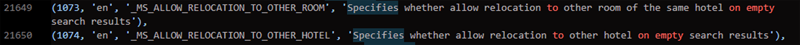
Exhibit T-008-B: System Configuration Registry for Relocation Settings
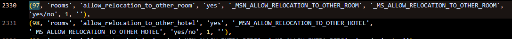
Source Text Excerpt: This configuration mapping governs when empty search results automatically unlock the smart relocation program for guests, defining room- and hotel-relocation options associated with empty search results.
Corresponds to Claim: Claim 1: "determining when inventory fails to satisfy minimum availability criteria..."
Exhibit T-009: Frontend User Disclosure & Discount Constants
Page Reference: | Annex Reference:
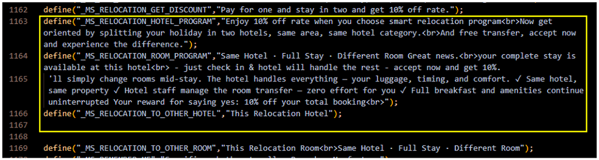
Source Text Excerpt: These are the exact strings displayed to users offering a 10% discount to split their holiday between two rooms or two hotels in the same area. It documents how the relocation option was presented to users.
Corresponds to Claim: Claim 1: User-Facing Text Describing the Relocation Offer.
Exhibit T-010-A: Property Seed Data with Coordinates and Relocation Flags ("28 May 2019")
Page Reference: | Annex Reference:

Exhibit T-010-B: Hotel Records Associating Coordinates with Relocation Permission Flags

Source Text Excerpt: The property records associate geographic coordinates with room- and hotel-relocation fields, supporting the stored property-data structure.
Corresponds to Claim: Claim 1: "storing listing inventory specifying location coordinates and determining split listings within geographic distance limits..."
Exhibit T-011-A: Account Model Retrieval of Room & Hotel Relocation Permissions
Page Reference: | Annex Reference:
(Storing listing inventory... and determining split availability based on system configuration and inventory capabilities.*) Demonstrates object-oriented runtime instantiation of host account profiles ]. The system dynamically reads host-level and system-level permissions (`room_relocation` and `hotel_relocation`) to determine whether split-stay itineraries (intra-hotel or inter-hotel) are permissible during search result aggregation
Exhibit T-011-B: Account Seed Record with Active Relocation Permissions (2019-06-25)

The SQL record shows an owner account with is_active = 1, room_relocation = 1 and hotel_relocation = 1, alongside the displayed timestamp of 25 June 2019. It establishes the recorded account settings and timestamp. Public availability is addressed by the accompanying Documentary and Visual annexes.
Corresponds to Claim: Claim 1 & Claims 2-4: System architecture storing listing availability and configuring dual-mode split-stay operations.
Exhibit T-012-A: Room-Level Booking Table Schema and Stay-Date Fields
Page Reference: | Annex Reference:
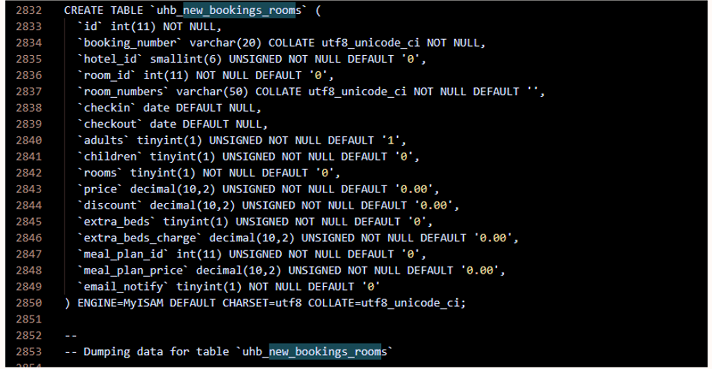
The uhb_new_bookings_rooms table contains booking, hotel and room identifiers, check-in/check-out dates and other reservation fields. It supports the storage of room-level booking information, but the schema alone does not prove that a master booking was linked to multiple executed stay segments
Exhibit T-012-B: Account Seed Record with Room- and Hotel-Relocation Flags
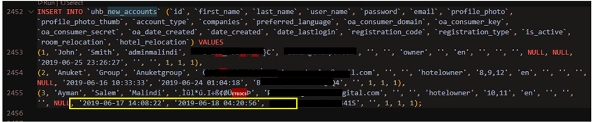
The SQL insert shows account records with stored activation and relocation fields. It supports the account-configuration evidence, rather than proving runtime account hydration or a completed splitstay transaction June 2019."
Corresponds to Claim: Claim 1: Storing listing inventory and processing multi-portion booking requests.
Exhibit T-013: Standard Availability Search & Video Demonstration Cross-Reference
Page Reference: | Annex Reference:
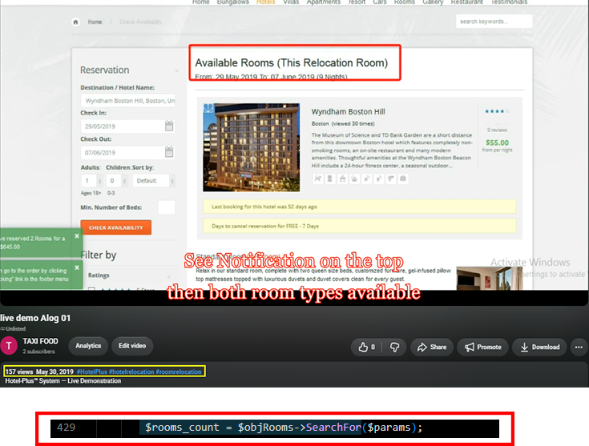
Source Text Excerpt: The video frame shows the Hotels Plus availability-search interface under ordinary reservation conditions (YouTube Walkthrough at [0:10/1:15]), providing visual context for the search system.
https://youtu.be/82XxQouNwQc?si=Uz2omF2w1SGb652v at [0:10/1:15]
Corresponds to Claim: Claim 1: "identifying matching accommodation when availability is sufficient..."
Exhibit T-014-A: Code Enforcement of Minimum & Maximum Room Quantities
Page Reference: | Annex Reference:
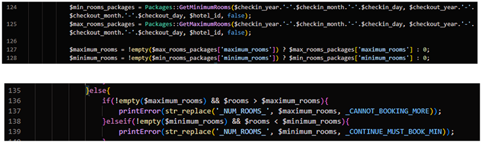
Exhibit T-014-B: Admin Panel Room Count Threshold Settings
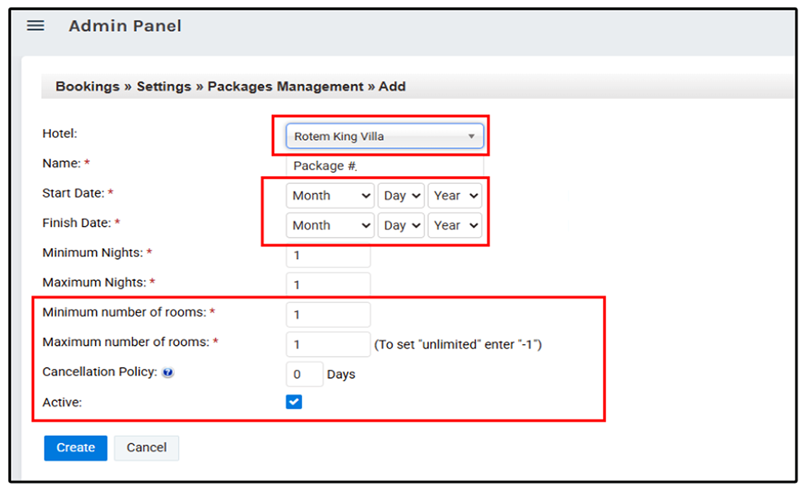
Source Text Excerpt: The code and admin screen show how minimum and maximum room quantities are configured and checked. These are room-count constraints enforced by package rules.
Corresponds to Claim: Claim 3: "evaluating minimum room count thresholds..."
Exhibit T-015-A: Split-Stay Segment Iteration & Parameter Building
Page Reference: | Annex Reference:
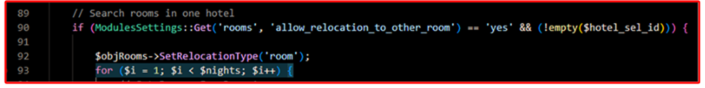
Exhibit T-015-B: Search for First and Second Stay Portions
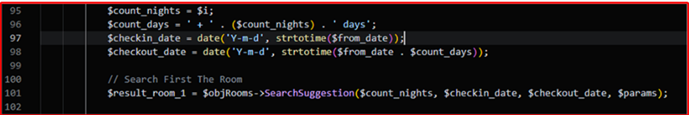
Exhibit T-015-C: Construction of Combined Two-Part Booking
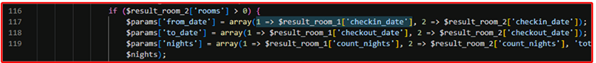
Exhibit T-015-D: Relocation Result Flagging & Conditional Handling
Source Text Excerpt: Here is the core logic where I set relocation type to room/hotel, loop through the stay nights, search individual segments, and construct the combined two-part parameter array.
Corresponds to Claim: Claim 1: Generating the Combined Listing / First & Second Stay Portions.
Exhibit T-016-A: Search Result Renderer & Sorting Parameters
Page Reference: | Annex Reference:
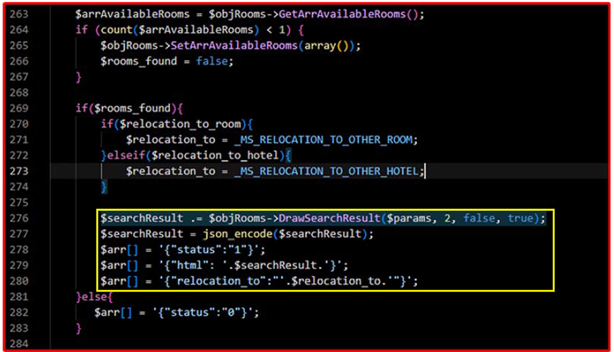
Exhibit T-016-B: Search Sorting & Filter Parameters
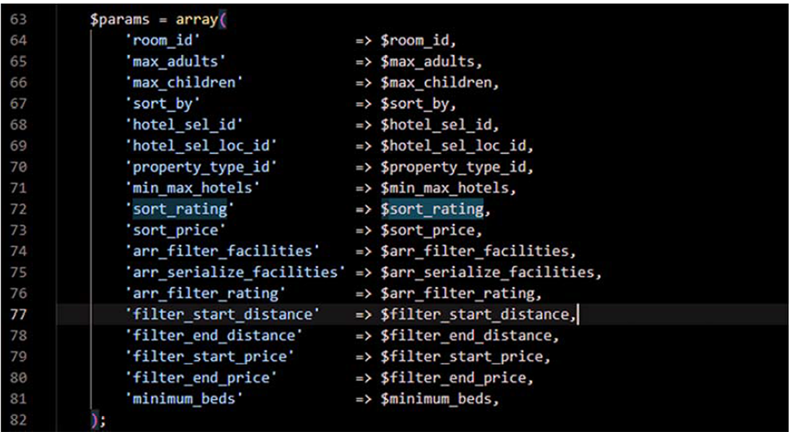
Source Text Excerpt: The code passes search results through the ordinary result-rendering process and includes conventional sorting and filtering parameters, such as distance, rating, and price.
Corresponds to Claim: Claim 1: "causing presentation of combined listing options..."
Exhibit T-017-A: Configurable Minimum/Maximum Stay Duration & Threshold Test
Page Reference: | Annex Reference:
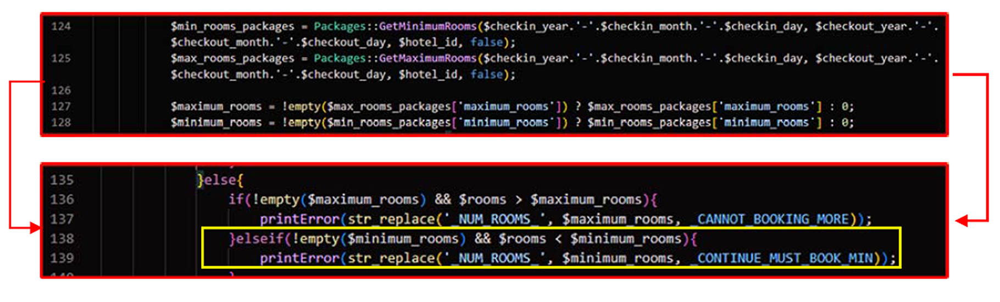
Exhibit T-017-B: UI Admin Control Panel Minimum Stay Night Threshold Enforcement
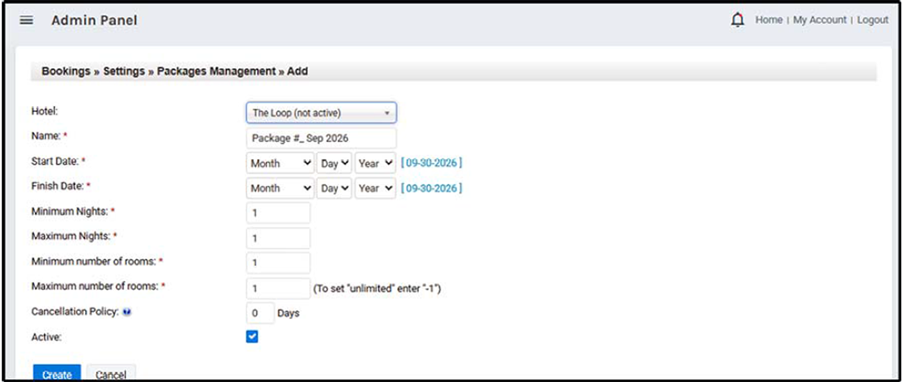
"Admins can configure minimum and maximum stay lengths per package in the control panel, allowing the engine to test requested dates against these rules.
Exhibit T-017-C: Configurable Minimum Stay Parameter (`uhb_new_packages`)
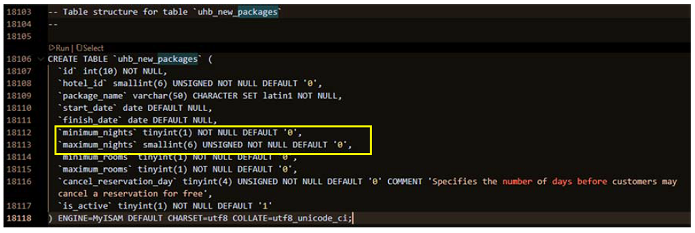
Exhibit T-017-D:Determine Applicable Minimum
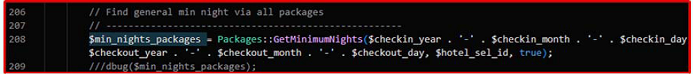
Exhibit T-017-E: Test Requested Stay Against Minimum
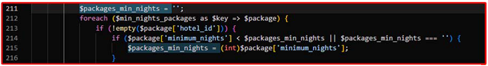
Corresponds to Claim: Claim 3: "comparing requested stay duration against length-of-stay constraints..."
Exhibit T-018-A: Earth-Radius Geographic-Distance Calculation
Page Reference: Page | Annex Reference:
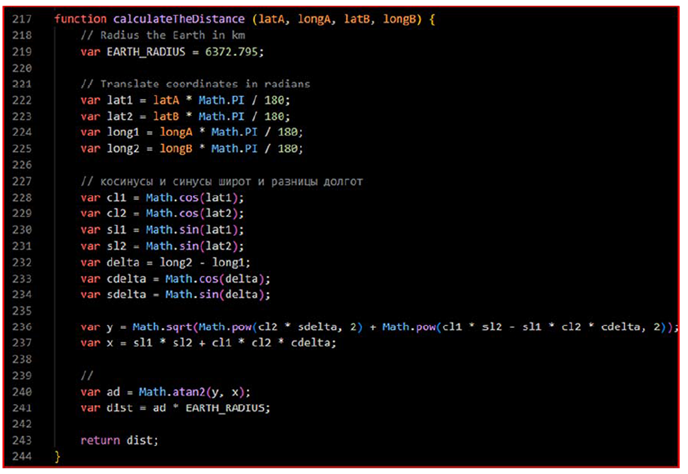
The function calculates geographic distance from two latitude/longitude coordinate pairs using an Earth-radius calculation. The distance-range filtering rules are shown in the following exhibits
"Using Earth's radius (6372.795 km), the code calculates the precise distance between a hotel and a central reference point, applying default upper distance limits (1000 km) for filtering
Exhibit T-018-B: Centre-Point Coordinate Inputs to the Distance Function
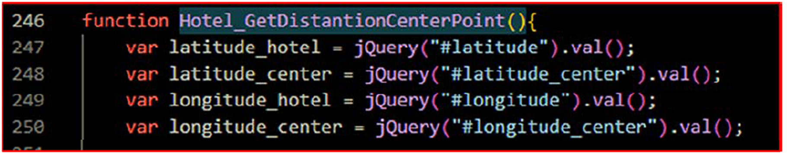
Exhibit T-018-C: Distance-Range Filtering Parameters
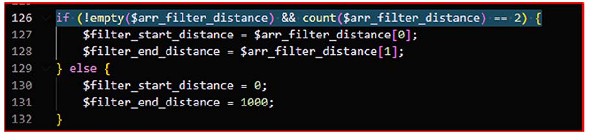
Exhibit T-018-D: Distance Bounds Passed into the Search Parameters
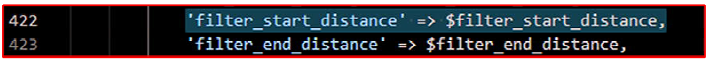
Corresponds to Claim: Claim 12: "computing geographic distance between listings using coordinate geometry..."
Exhibit T-019-A: Admin Map Center Coordinate Setup & Distance Queries
Page Reference: | Annex Reference:
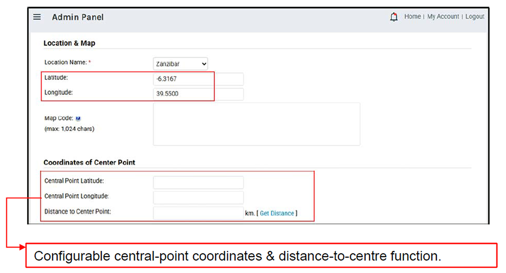
Configurable central-point coordinates & distance-to-centre function
Exhibit T-019-B: Distance Calculation — Coordinate Inputs
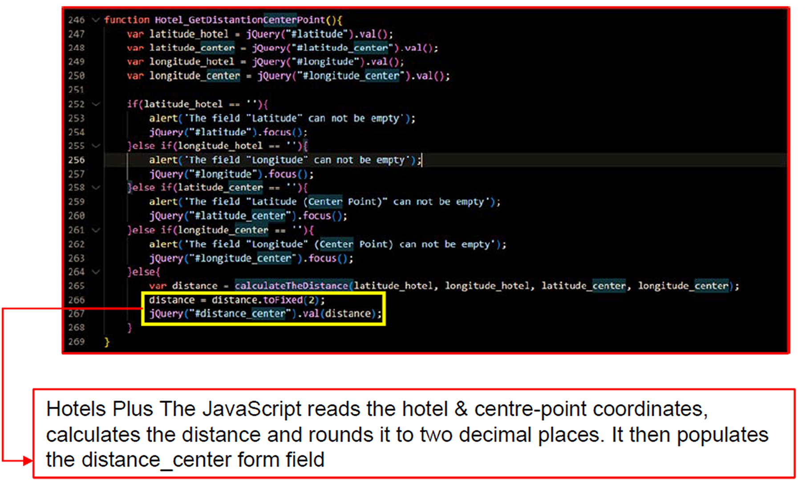
Source Text Excerpt: Hotels Plus The JavaScript reads the hotel & centre-point coordinates, calculates the distance and rounds it to two decimal places. It then populates the distance_center form field
Admins input center point coordinates in the UI, & the JS helper computes rounded distances (toFixed(2)) to construct database query clauses (distance_center)
Corresponds to Claim: Claim 12: "storing and querying distance to center point parameters..."
Exhibit T-019-C: Distance-Range Query Conditions & Centre-Point Form Fields
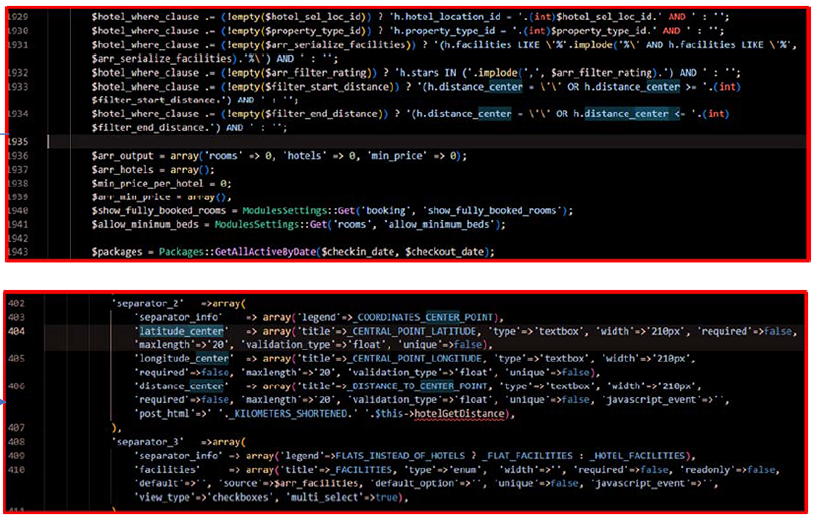
Source Text Excerpt:Hotels Plus The search conditions compare distance_center with the configured lower and upper distance values. The accompanying form-field definitions show the centre-point coordinates and distance-to-centre settings.
Exhibit T-019-D: Wayback Machine AJAX Endpoint Public Verification
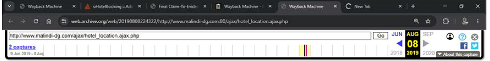
Source Text Excerpt:Supplementary Technical Evidence — Archived AJAX Endpoint.
The Wayback Machine capture dated 9 June 2019 shows the Hotels Plus /ajax/hotel_location.ajax.php endpoint in the public archive. It corroborates the historical presence of the endpoint, but does not establish its runtime output or the underlying distance-calculation logic.
Exhibit T-020-A: Customer Settings: Remember-Me Option
Page Reference: | Annex Reference:
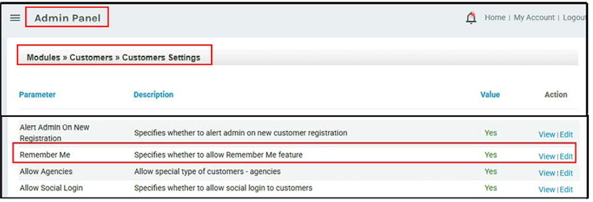
Exhibit T-020-B: Language Strings for the Remember-Me Setting
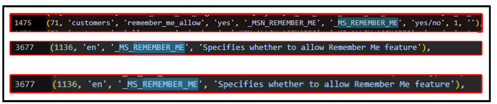
Exhibit T-020-C: Customer Management Interface with Customer-Group Filter
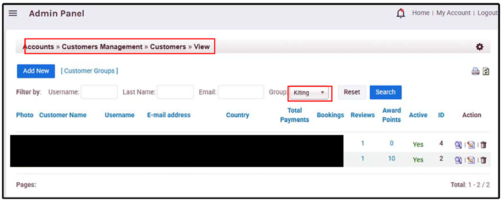
Source Text Excerpt: Admin panel settings managing customer registration alerts, remember-me privileges, and customer group filtering inside the database.
Corresponds to Claim: Claim 13: Administering customer profile settings and classification groups.
Exhibit T-021-A: Customer Payment Total Aggregation
Page Reference: | Annex Reference:
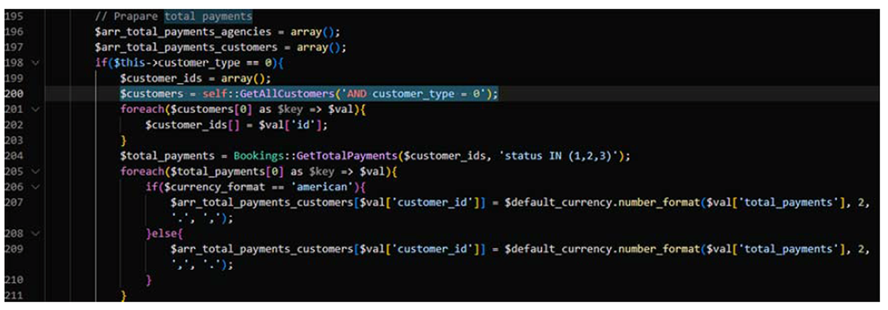
Hotels Plus "The code passes customer IDs to Bookings::GetTotalPayments() and associates the returned totals with those IDs. It shows customer-linked payment history, rather than using that history to rank split-stay results
Exhibit T-021-B: Customer-Specific Wishlist Association
Page Reference: | Annex Reference:
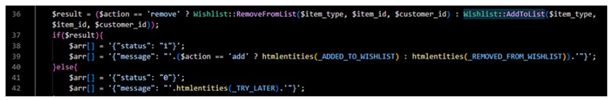
Hotels Plus associates an individual customer ID with a selected accommodation/item through the Wishlist subsystem, providing executable add/remove operations for customer-specific selections
Source Text Excerpt: The system links customer IDs to historical booking payments and manages wishlist additions/removals on a per-customer basis.
Corresponds to Claim: Claim 4: "associating customer profile history and user selections..."
Exhibit T-022-A: Loyalty & Award Points Management Class
Page Reference: | Annex Reference:
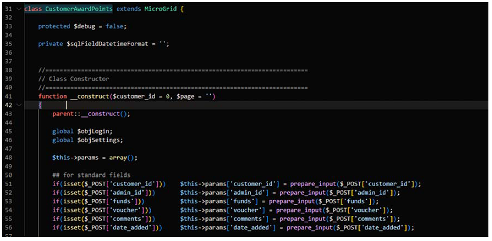
Hotels Plus/ "I built a dedicated CustomerAwardPoints class instantiated via customer ID to track loyalty funds, vouchers, and comments inside the admin panel
Exhibit T-022-B: Customer-Specific Award-Point Record Management
Page Reference: | Annex Reference:
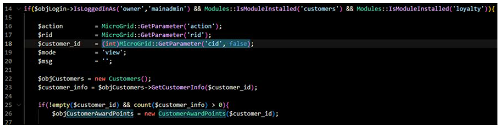
Hotels Plus retrieves a specific customer by customer ID and instantiates CustomerAwardPoints($customer_id) for that customer, with executable operations to create, update, delete and remove customer-specific award-point records
Exhibit T-022-C: Loyalty Module Settings Retrieval
Page Reference: | Annex Reference:
Corresponds to Claim: Claim 4: "managing customer profile data and loyalty aggregations..."
Exhibit T-023-A: Customer Record Retrieval by Customer ID
Page Reference: | Annex Reference:
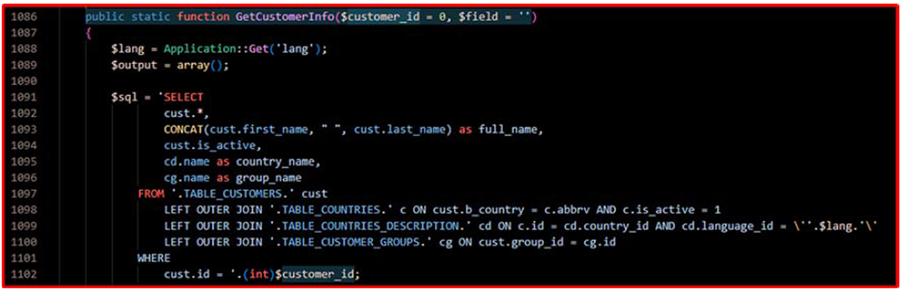
Source Text Excerpt: These excerpts show that Hotels Plus can retrieve customer aributes and associated booking history. They do not by themselves establish automatic desnaoncategory selecon based on prior interacons
Exhibit T-023-B: Customer Record Retrieval & Booking Table Joins
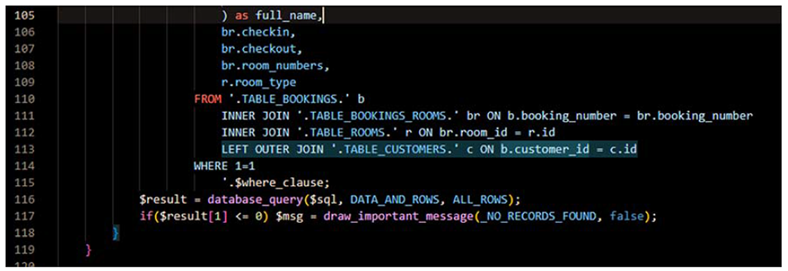
Hotels Plus The backend queries join booking records (uhb_new_bookings_rooms) directly with customer accounts (uhb_new_customers) using customer_id to pull checkin, checkout, and room details.
Corresponds to Claim: Claim 1: "receiving search parameters and presenting accommodation options..."
Exhibit T-024: CPre-Booking Timeout & Reservation Expiration Engine
Page Reference: | Annex Reference:
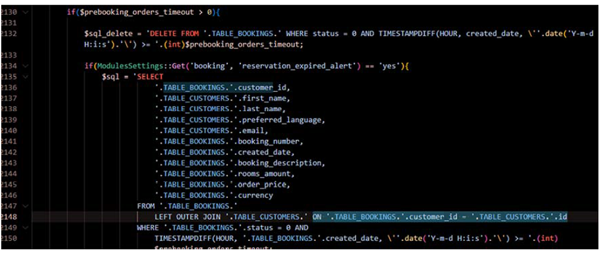
Source Text Excerpt:Hotels Plus "This routine checks pre-booking order timeouts using timestamp differences (TIMESTAMPDIFF) to clean up expired orders and alert admins regarding pending customer bookings."
Exhibit T-025: Annotated Split Search Sketch: Same Hotel and Cross Hotel Alternaves
Page Reference: | Annex Reference:
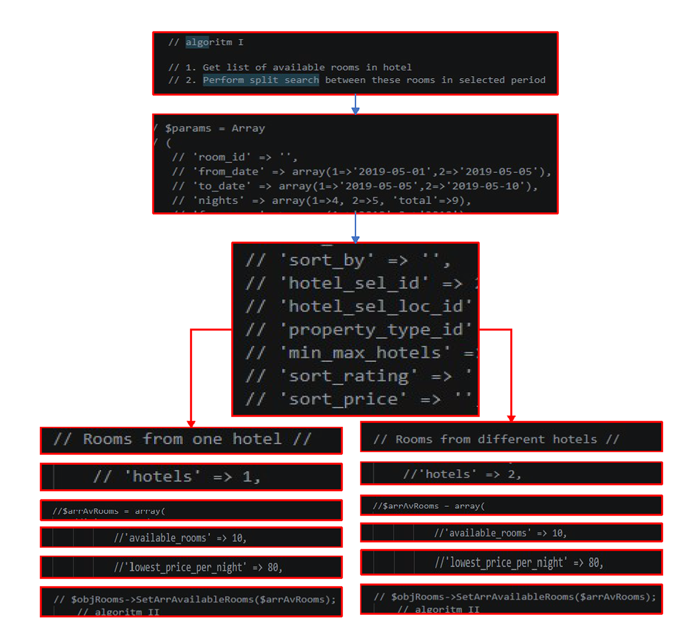
Source Text Excerpt:The annotated code comments describe a split-search sequence and illustrate separate stay-date and night parameters for single-hotel and cross-hotel alternatives. The displayed lines are comments, so this image is an explanatory sketch rather than independent proof that the described operations execute.."
Corresponds to Claim: Claims 14 & 15: "monitoring reservation status and managing booking lifecycle states..."